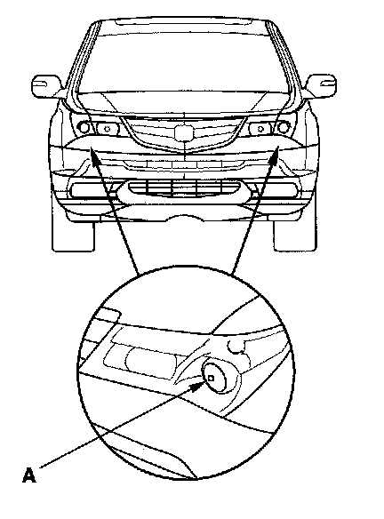
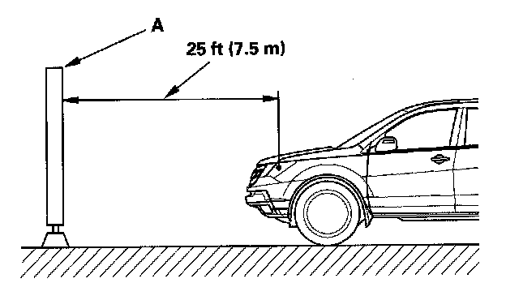
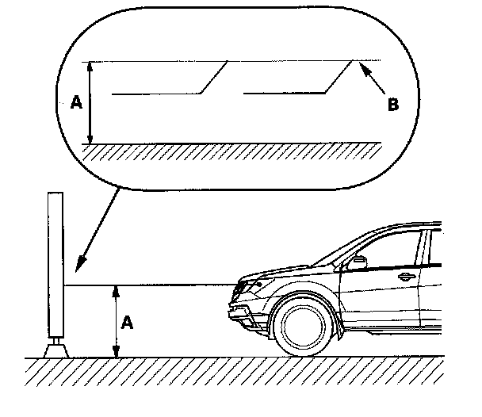
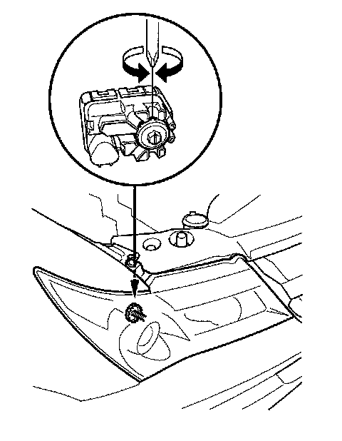

Headlamp: Adjustments
Headlight AdjustmentCAUTION: Headlights become very hot during use; do not touch them or any attaching hardware immediately after they have been turned off.
Before adjusting the headlights:
- Park the vehicle on a level surface.
- Make sure the tire pressures are correct.
- The driver or someone who weighs the same should sit in the driver's seat.

1. Clean the outer lens so that you can see the center (A) of the headlights.

2. Park the vehicle in front of a wall or a screen (A).
3. Turn the low beams on.

4. Determine if the headlights are aimed properly.
Vertical adjustment:
Measure the height of the headlights (A).
Adjust the cut line (B) to the lights height.

5. If necessary, open the hood and adjust the headlights to local requirements by turning the vertical adjuster.